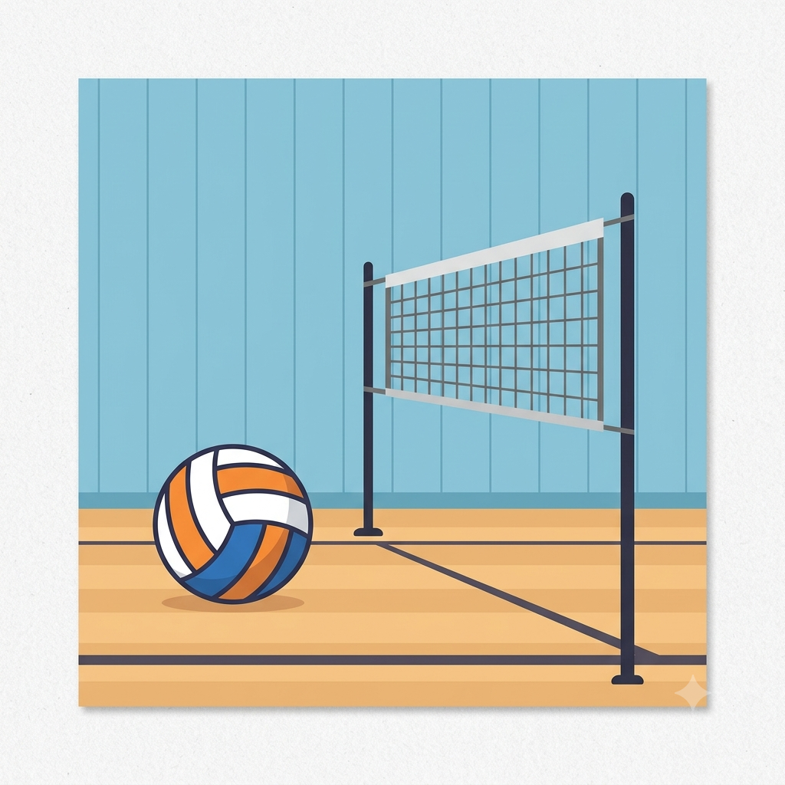

Bem-vindos ao Blog do Vôlei!
Por: Eduardo Augusto Machuga Pereira
Neste espaço vou compartilhar dados, curiosidades e reflexões sobre um dos esportes mais apaixonantes do planeta.
Curiosidades, táticas e histórias do mundo do voleibol por Eduardo Augusto Machuga Pereira

Por: Eduardo Augusto Machuga Pereira
Neste espaço vou compartilhar dados, curiosidades e reflexões sobre um dos esportes mais apaixonantes do planeta.

Por: Eduardo Augusto Machuga Pereira
O vôlei foi criado em 1895 por William G. Morgan nos EUA sob o nome de 'Mintonette', pensado como um esporte sem contato físico direto.
Fonte: FIVB

Por: Eduardo Augusto Machuga Pereira
Famoso na década de 80 com Bernard Rajzman, a bola subia cerca de 25 metros de altura e caía como um meteoro na quadra adversária.
Fonte: CBV

Por: Eduardo Augusto Machuga Pereira
Introduzido em 1998 para tornar os ralis mais longos e o jogo mais dinâmico, o líbero é o especialista em recepção e defesa.
Fonte: WebVôlei

Por: Eduardo Augusto Machuga Pereira
No vôlei masculino profissional, o saque e a cortada podem ultrapassar incríveis 130 km/h, exigindo reflexos impressionantes dos defensores.
Fonte: Guiness World Records

Por: Eduardo Augusto Machuga Pereira
Apesar das regras parecidas, o vôlei de praia possui dimensões de quadra ligeiramente menores e apenas dois jogadores, exigindo extremo preparo físico.
Fonte: Ge